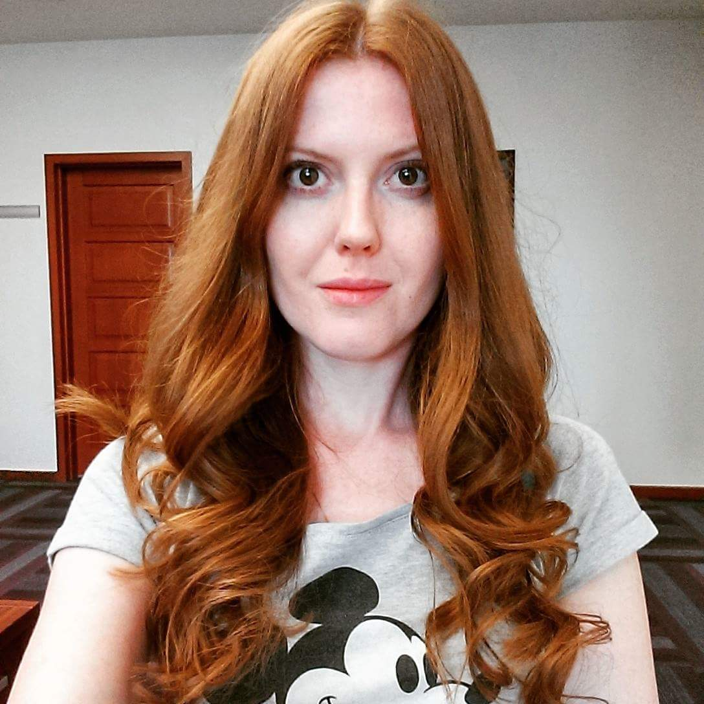

Oksana Krutik

Personal Data:
- Name: Oksana Krutik
- City: Kyiv
- Sex: Female
- oksunny.sunny@gmail.com
- LinkedIn
- Facebook
Intro
Since December I've started to study HTML, CSS and Java Script basics on my own. I liked it a lot. I want to challenge myself and to study more. I have always considered Developing and Web Developing in particular very interesting and creative sphere. I've always wanted to try my self in the sphere. I speak 3 foreign languages. My English is fluent and my Spanish together with Polish are advanced.
06.2010 - till the present moment MTI LLC
11.2014 - till the present moment MTI Vice Presidents Assistant
Duties:
- Providing administrative support
- Translating to English from Russian/Ukrainian and vice versa
- Arranging foreign trips
- Providing visa support
- Providing on call availability and tasks managing
05.2011 - 08.2014 MTI LLC
Luxury Brands Department Senior Executive & Administrative Assistant
Duties:
- Managing the full chain of BALLY goods shipment to Ukraine
- Supporting fully BALLY and outlet Ultimo stores
- Coordinating the Supplier and Transporter actions
- Controlling: timely shipments to Ukraine in accordance with the Agreement Conditions; quality of delivered goods
and timely compensation payments; timely payments to Supplier in accordance with the Agreement;
- Giving the claims to Supplier
- Preparing Shipping Documents in the Logistics Software Program
- Supporting fully and controlling the goods logistics between the stores within Ukraine
- Doing revaluation and taking part in pricing in BALLY and Ultimo Stores
- Preparation of statistics data on sales and other indexes
- Doing the goods' transits analysis between the stores within Ukraine
- Coordinating fully Client's Individual Order Service (Made To Order). Controlling the accuracy in accordance with
client's order and the timely shipments
- Managing Payment Balance
- Translating to English and Russian in the written form of agreements, letters and other documents
- Interpreting and translating simultaneously on business meetings and business trainings
- Organization of business training and foreign and domestic business trips for department employees. Getting Visa,
arranging of transfer, accommodation and preparation of reports after the business trips are finished
06.2010 -05.2011 MTI LLC
MTI Shoes and Apparel Division CEO and Chief Commercial Officer Assistant
Key Skills and Competencies:
- HTML Basics
- CSS Basics
- JavaScript Basics
- SQL Starter
- Scrach
- Fluent English
- Advanced Spanish
- Advanced Polish
- Karta Polaka
- Experience of Consecutive interpretation and translation
Personal Qualities
I can descritbe mysefl as hardworking, responsible, self-motivated and constantly self-educating person. I have ability to establish priorities and work under limited supervision. I am flexible, initiative, open to new ideas and willing to learn. I like to learn something new. I wish I had learned more languages including programming. I love to read books in the original and watch movies in the the original. Of course I do sport, mostly swiming. I also like traveling but I wish I could travel more.
Education:
- Kyiv National Economic University(2009-2012). International Economy School. Master on International Finance Management
- Kyiv National Linguistic University (2004-2009) Specialist Degree. Philologist, Translator and Interpreter of English and Spanish